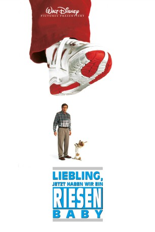

#9237 Liebling, jetzt haben wir ein Riesenbaby
Alternativ: Honey I Blew Up the Kid
 
 IMDB-Wertung: 4.8 / 10
IMDB-Wertung: 4.8 / 10  Metascore: 0
Metascore: 0 
Wayne Szalinski kann das Experimentieren einfach nicht lassen: Diesmal trifft es den zweijährigen Adam, der unbeabsichtigt in den Strahl von Waynes Vergrößerungsmaschine gerät. Dabei ist es gerade mal wenige Jahre her, dass er in "Liebling, ich habe die Kinder geschrumpft" seinen ersten Sprösslingen zu einer äußerst ungewohnten neuen Perspektive verholfen hat. Waynes Frau findet auch das neueste verunglückte Experiment alles andere als witzig. Schnell bemerkt die Familie Szalinski, dass das Riesen-Baby wächst, und wächst und wächst. Als es sich in Richtung Las Vegas bewegt, ist Eile geboten. Ein 35 Meter großes Kleinkind auf dem Weg in die Lichtermetropole kann nicht unbemerkt bleiben. Großer Ärger steht bevor ...
Jahr: 1992
Dauer: 85 Minuten
FSK: 6
Land: USA Studio: Buena Vista Pictures Distribution, Inc.Tonspuren: DD5.1 - ,
Untertitel:
Auflösung: 1080p (1920x1080) Größe: 6154 MB
Genre: Sci-Fi, Komödie, Abenteuer, Familie, Liebe
Regisseur:  Randal Kleiser
Randal Kleiser
Drehbuch: Stuart Gordon
Soundtrack: Bruce Broughton
Darsteller:
 Rick Moranis als Wayne
Rick Moranis als Wayne- Marcia Strassman als Diane
- Robert Oliveri als Nick
- Daniel Shalikar als Adam
- Joshua Shalikar als Adam
 Lloyd Bridges als Clifford Sterling
Lloyd Bridges als Clifford Sterling- John Shea als Hendrickson
 Keri Russell als Mandy
Keri Russell als Mandy Ron Canada als Marshall Brooks
Ron Canada als Marshall Brooks- Amy O'Neill als Amy Szalinski
 Michael Milhoan als Capt. Ed Myerson
Michael Milhoan als Capt. Ed Myerson Gregory Sierra als Terence Wheeler
Gregory Sierra als Terence Wheeler- Leslie Neale als Constance Winters
 Julia Sweeney als Nosey Neighbor
Julia Sweeney als Nosey Neighbor- John Paragon als Lab Technician
 Kenneth Tobey als Smitty
Kenneth Tobey als Smitty Bill Moseley als Federal Marshall
Bill Moseley als Federal Marshall Alex Daniels als Uncle Yanosh
Alex Daniels als Uncle Yanosh- Robert Jaffe als Motorcycle Officer
- Ron Lawrence als Motorcycle Officer
- James A. Brooks als Street Sweeper (uncredited)
- Bill Gobber als Las Vegas Kid (uncredited)
 D'Janine King-Lasky als Spectator (uncredited)
D'Janine King-Lasky als Spectator (uncredited) Gary Rodriguez als Motorcycle Cop (uncredited)
Gary Rodriguez als Motorcycle Cop (uncredited)- Jeremy Settles als Street Performer (uncredited)
- Derek A. Smith als Hard Rock Patron (uncredited)
- Tabler als Lab Technician (uncredited)
- Mark Taormino als Spectator (uncredited)
- Linda Carlson als Nosey Neighbor
- Lisa Mende als Lab Technician
- Ed Feldman als Las Vegas Couple
- Suzanne Kent als Las Vegas Couple
- John Hora als Helicopter Observer
- Mary Ellen Moore als Police Woman
- Randy Swallow als Vegas Reporter
- Pamela Cederquist als Vegas Reporter
- James M. Lauten als Vegas Reporter
- Shannon M. Steger als Nevada Militia
- Minori Goto als Japanese Tourist
- Mamoru Kanal als Japanese Tourist
- Gregory McCurdy als Police Officer
- David Scates als Rock Fan in Crowd
- Marion Palmer als Hard Rock Reporter
- Kathy Pastor als Hard Rock Hostess
- Bill Loska als Highway Patrol Officer
- Brian Caban als News Cameraman (uncredited)
- Chris Frank als Las Vegas Cop (uncredited)
- Stan Rodarte als Frantic Person in street (uncredited)
- Luc Thelliez als Person in panicked crowd (uncredited)
- J.R. West als Motorcycle Cop (uncredited)
Datei: X:\4-Tetralogie(A-K)\Geschrumpft\Liebling, jetzt haben wir ein Riesenbaby (1992, FSK6, 1920x1080).mkv seit 20.07.2018
Festplatte: HD Collection-3(N-Z)-6(A-Z)
 Es gibt insgesamt 7 Filme in der Gruppe '4-Tetralogie(A-K)\Geschrumpft'
Es gibt insgesamt 7 Filme in der Gruppe '4-Tetralogie(A-K)\Geschrumpft'